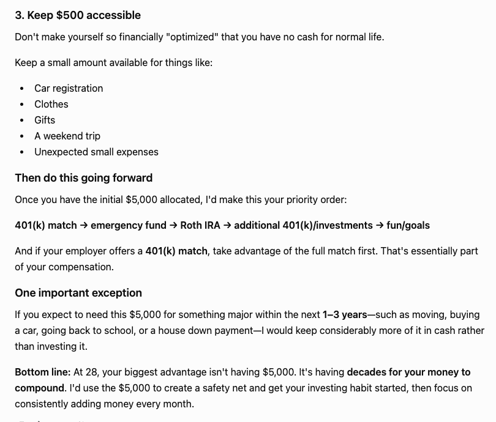
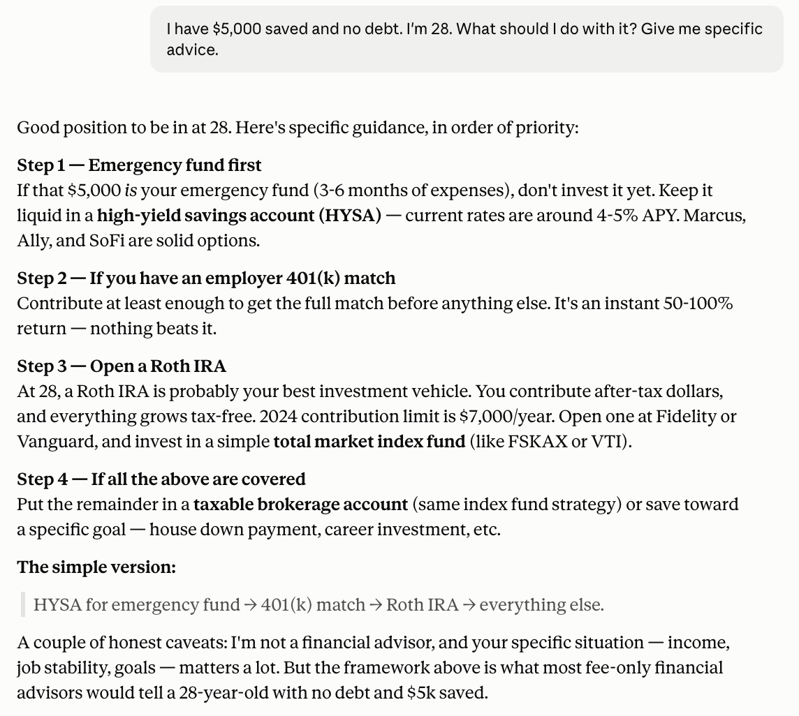
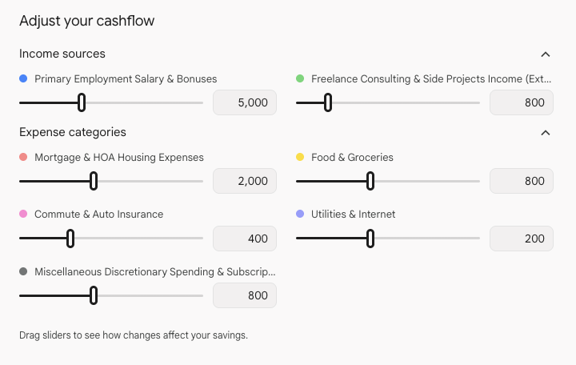
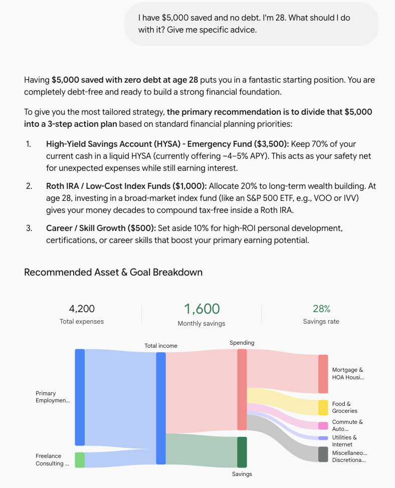

Same money question, three chatbots. All gave sound advice — but one was systematic, one was human, and one made compounding impossible to ignore.
Personal finance is exactly the kind of question people bring to AI now — and exactly the kind where a confident wrong answer can cost you. So I gave ChatGPT, Claude, and Gemini an identical, realistic prompt and compared not just what they said, but how responsibly they said it.
The encouraging headline first: all three gave genuinely sound, mainstream advice. None recommended anything reckless. None told a 28-year-old to put $5,000 into crypto or meme stocks. All three landed on the same core framework that most fee-only financial planners would endorse — emergency fund first, then tax-advantaged retirement, then everything else. The differences were in emphasis, specificity, and tone.
ChatGPT structured its answer as a strict priority order, Step 1 through Step 4, and did something the others underplayed: it put the employer 401(k) match front and center.

Its framing — "contribute at least enough to get the full match before anything else, it's an instant 50-100% return, nothing beats it" — is the single most valuable piece of advice in any of the three answers, and ChatGPT emphasized it most clearly. It also named specific vehicles (Marcus, Ally, SoFi for savings; FSKAX or VTI for index funds) and closed with the clearest disclaimer of the three: "I'm not a financial advisor, and your specific situation matters a lot."
Claude gave the same core framework but added a note the others largely skipped: do not over-optimize yourself into having no cash for normal life.

It explicitly set aside money for "car registration, clothes, gifts, a weekend trip," and flagged an important exception: if you expect to need the $5,000 for something major in the next 1-3 years — moving, a car, going back to school — keep more of it in cash rather than investing. That is the kind of real-life caveat a good human advisor adds and a formulaic answer misses. Its closing reframe was strong too: "At 28, your biggest advantage isn't having $5,000. It's having decades for your money to compound."
Gemini led with a clean allocation table ($3,000 / $1,500 / $500) and then did the thing that makes compounding actually land: it showed the numbers over time.

Investing $300/month at 7% average return: about $54,000 by 38, $142,000 by 48, $302,000 by 58, $620,000 by 68. Seeing the curve is far more motivating than being told "compounding is powerful," and Gemini was the only one to make it concrete. It even generated an interactive cashflow tool to adjust income and expenses.

To its credit, Gemini labeled the projections clearly: "Those are illustrations, not guaranteed returns." Good practice on a number that could otherwise read as a promise.
By now the shape is familiar. ChatGPT was the most systematic and action-ready, with named products and the sharpest single insight (the 401k match). Claude was the most human, remembering that a financial plan has to leave room for an actual life. Gemini was the most visual, turning abstract advice into a table and a compounding curve you can feel.
The most reassuring finding is what they had in common. On a high-stakes, easy-to-get-wrong question, all three were responsible: sound framework, no reckless bets, and — importantly — every one of them included a disclaimer that it is not a financial advisor. That is the behavior you want to see.
ChatGPT for a clear, prioritized action plan with specific next steps you can execute this week.
Claude for advice that factors in your actual life, not just the optimized spreadsheet — especially useful if your near-term plans are uncertain.
Gemini for motivation and visualization — if seeing the long-term payoff is what gets you to actually start.
But the real takeaway sits above all three: an AI is a solid starting point for financial literacy — understanding the framework, learning the vocabulary, seeing the options. It is not a substitute for advice tailored to your full situation by someone who is accountable for it. All three models said as much themselves.
Asked what to do with $5,000, ChatGPT, Claude, and Gemini all gave sound, mainstream, responsible advice with the same core framework — emergency fund, then Roth IRA, then invest. ChatGPT was the most systematic, Claude the most human, Gemini the most visual, and all three correctly flagged that they are not financial advisors. Use AI to learn the landscape. Use a professional to make the call.